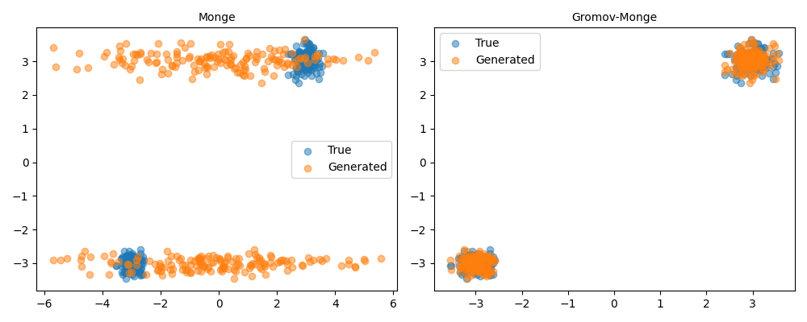

Note
Go to the end to download the full example code.
5.6.c Application of OT in Disitribution Sampling : High-Dimensional case
This section introduces the concept of partition of unity in the context of kernel methods and how CodPy implements it via projection operators.
Overview
import numpy as np
import pandas as pd
from matplotlib import pyplot as plt
from codpy import core
from codpy.kernel import Kernel,Sampler
from codpy.plot_utils import multi_plot
def normal_wrapper(center, size, radius=1.0, **kwargs):
return np.random.normal(loc=center, scale=radius, size=size)
def student_wrapper(center, size, **kwargs):
df = kwargs.get("df", 3.0)
out = np.random.standard_t(df, size=size)
out += center
return out
def generate_multimodal_data(
N=500,
D=1,
num_clusters=2,
centers=None,
radii=None,
weights=None,
random_variable=None,
seed=None,
**kwargs,
):
"""
Generate synthetic multimodal data from a mixture of clusters.
Parameters:
N (int): Total number of samples.
D (int): Dimensionality of the data.
num_clusters (int): Number of clusters.
centers (np.ndarray): Optional. Shape (num_clusters, D).
radii (np.ndarray): Optional. Std dev per cluster.
weights (np.ndarray): Optional. Cluster weights (should sum to 1).
random_variable (callable): Custom sampling function. Default is np.random.normal.
Returns:
x (pd.DataFrame): Data samples.
labels (pd.Series): Cluster labels for each sample.
"""
if seed is not None:
np.random.seed(seed)
if centers is None:
centers = np.random.normal(loc=0.0, scale=0.5, size=(num_clusters, D))
centers -= centers.mean(axis=0)
centers = centers * 4./np.linalg.norm(centers, axis=1, keepdims=True)
if radii is None:
radii = np.abs(np.random.normal(loc=0.2, scale=0.1, size=num_clusters))
if weights is None:
weights = np.ones(num_clusters) / num_clusters
if random_variable is None:
random_variable = normal_wrapper
x_list, label_list = [], []
for i in range(num_clusters):
num_samples = int(N * weights[i])
samples = random_variable(
center=centers[i], size=(num_samples, D), radius=radii[i], **kwargs
)
x_list.append(samples)
label_list.extend([i] * num_samples)
x = pd.DataFrame(np.vstack(x_list), columns=[f"dim_{d}" for d in range(D)])
labels = pd.Series(label_list, name="cluster")
return x, labels
def df_summary(df):
return pd.DataFrame(
{
"Mean": df.mean(),
"Variance": df.var(),
"Skewness": df.skew(),
"Kurtosis": df.kurtosis(),
}
)
from scipy.stats import ks_2samp
def ks_testD(x, y, alpha=0.05):
"""
Performs Kolmogorov-Smirnov test for each dimension.
Parameters:
x (np.ndarray or pd.DataFrame): First sample.
y (np.ndarray or pd.DataFrame): Second sample.
alpha (float): Significance level (default 0.05).
Returns:
pd.Series: p-values from the KS test.
pd.Series: Constant threshold values (same for all dimensions).
"""
x = x.values if isinstance(x, pd.DataFrame) else x
y = y.values if isinstance(y, pd.DataFrame) else y
D = x.shape[1]
p_values = []
thresholds = []
for i in range(D):
stat = ks_2samp(x[:, i], y[:, i])
p_values.append(stat.pvalue)
thresholds.append(alpha) # Optional: could vary if computed per dim
return pd.Series(p_values, name="p-value"), pd.Series(thresholds, name="threshold")
def stats_df(dfx_list, dfy_list, f_names=None, fmt="{:.2g}"):
"""
Computes and formats summary statistics between reference and sampled data.
Parameters:
dfx_list (list): List of reference datasets (np.ndarray or pd.DataFrame).
dfy_list (list): List of sampled datasets (np.ndarray or pd.DataFrame).
f_names (list): Optional. Row labels. Should match total number of columns across all datasets.
fmt (str): Format string for floats.
Returns:
pd.DataFrame: Formatted summary statistics.
"""
if not isinstance(dfx_list, list):
dfx_list = [dfx_list]
if not isinstance(dfy_list, list):
dfy_list = [dfy_list]
def format_pair(x_vals, y_vals):
return [f"{fmt.format(x)} ({fmt.format(y)})" for x, y in zip(x_vals, y_vals)]
all_stats, full_index = [], []
for i, (dfx, dfy) in enumerate(zip(dfx_list, dfy_list)):
dfx = pd.DataFrame(dfx)
dfy = pd.DataFrame(dfy)
sx, sy = df_summary(dfx), df_summary(dfy)
ks_df, ks_thr = ks_testD(dfx, dfy)
stats = {
"Mean": format_pair(sx.Mean, sy.Mean),
"Variance": format_pair(sx.Variance, sy.Variance),
"Skewness": format_pair(sx.Skewness, sy.Skewness),
"Kurtosis": format_pair(sx.Kurtosis, sy.Kurtosis),
"KS test": format_pair(ks_df, ks_thr),
}
all_stats.append(pd.DataFrame(stats, index=dfx.columns))
if f_names and i < len(f_names):
full_index.extend([f"{f_names[i]}:{col}" for col in dfx.columns])
else:
full_index.extend(dfx.columns)
result = pd.concat(all_stats)
result.index = full_index
return result
High dimensional illustrations
def D_dim_table(f_x, f_z, f_names=["OT", "with encoding"]):
"""
Computes rows with Max, Median, and Min KS test values for both methods.
Parameters:
f_x, f_z: Tuple of (true_data, generated_data) for two methods.
f_names (list): Labels for the two methods.
Returns:
pd.DataFrame: Summary table with labeled rows.
"""
def extract_extremes(df_stats):
# Parse KS values
ks_vals = df_stats["KS test"].str.split("(", expand=True)[0].astype(float)
# Identify indices for extreme cases
idx_max = ks_vals.idxmax()
idx_median = (ks_vals - ks_vals.median()).abs().idxmin()
idx_min = ks_vals.idxmin()
return df_stats.loc[[idx_max, idx_median, idx_min]]
# Get individual stats tables
table1 = stats_df(f_x[0], f_x[1])
table2 = stats_df(f_z[0], f_z[1])
# Extract key rows
summary1 = extract_extremes(table1)
summary2 = extract_extremes(table2)
# Assign readable row labels
summary1.index = [
f"{f_names[0]} (Max)",
f"{f_names[0]} (Median)",
f"{f_names[0]} (Min)",
]
summary2.index = [
f"{f_names[1]} (Max)",
f"{f_names[1]} (Median)",
f"{f_names[1]} (Min)",
]
return pd.concat([summary1, summary2])
def D_dim_index(f_x, f_z, f_names=["OT", "with encoding"]):
"""
Identifies indices with lowest and highest KS test scores across dimensions.
Returns:
(list, list): (min_indices, max_indices)
"""
min_indices = []
max_indices = []
for x, z in zip(f_x, f_z):
df = stats_df(x, z)
ks_vals = df["KS test"].str.split("(", expand=True)[0].astype(float)
min_indices.extend(ks_vals.nsmallest(2).index.tolist())
max_indices.extend(ks_vals.nlargest(2).index.tolist())
return min_indices, max_indices
def scatter_plot(xfx, ax=None, title="", **kwargs):
xp, fxp = xfx[0], xfx[1]
ax.scatter(xp[:, 0], xp[:, 1], label="True", alpha=0.5)
ax.scatter(fxp[:, 0], xp[:, 1], label="Generated", alpha=0.5)
ax.set_title(title)
ax.legend()
def plot_best_worst(true_data, generated_data):
"""
Plots best and worst reconstructed dimensions based on KS statistics.
"""
min_indices, max_indices = D_dim_index(true_data, generated_data)
def extract_by_index(data, indices):
return [
d[:, [i for i in indices if isinstance(i, str) or i in range(d.shape[1])]]
for d in data
]
best_OT = extract_by_index([true_data[0], generated_data[0]], max_indices)
best_enc = extract_by_index([true_data[1], generated_data[1]], max_indices)
worst_OT = extract_by_index([true_data[0], generated_data[0]], min_indices)
worst_enc = extract_by_index([true_data[1], generated_data[1]], min_indices)
plot_data = [best_OT, best_enc, worst_OT, worst_enc]
titles = ["Monge best", "Gromov-Monge best", "Monge worst", "Gromov-Monge worst"]
multi_plot(
plot_data,
fun_plot=scatter_plot,
f_names=titles,
mp_nrows=1,
mp_figsize=(12, 4),
legends=[["True", "Generated"]] * len(plot_data),
)
def get_figures_data(
D=2, N=300, N_samples=300, centers=None, random_variable=normal_wrapper, **kwargs
):
"""
Generates synthetic multimodal data and samples from it using kernel-based mapping.
Parameters:
D (int): Dimension of the data.
N (int): Number of reference samples.
N_samples (int): Number of samples to generate from the learned sampler.
centers (np.ndarray): Optional custom centers for the clusters.
random_variable (callable): Sampling function (e.g., normal_wrapper or student_wrapper).
Returns:
tuple: (reference_data (np.ndarray), sampled_data (np.ndarray))
"""
# Default centers: two symmetric clusters
if centers is None:
centers = np.vstack([np.full(D, 3.0), np.full(D, -3.0)])
# Generate reference multimodal dataset
ref_df, _ = generate_multimodal_data(
N=N, D=D, centers=centers, random_variable=random_variable, **kwargs
)
ref = ref_df.values
# Sample from it using kernel + sampler
sampler = Sampler(ref,**kwargs)
sampled = sampler.sample(N_samples)
return ref, sampled
def figure(
xy,
f_names=None,
mp_ncols=2,
mp_nrows=1,
fun_plot=scatter_plot,
figsize=(10, 4),
legends=None,
**kwargs,
):
"""
Displays multiple 2D plots of true vs generated data.
Parameters:
xy (list): List of (reference, sampled) pairs.
f_names (list): List of titles for each subplot.
mp_ncols (int): Number of columns in the plot grid.
mp_nrows (int): Number of rows in the plot grid.
fun_plot (callable): Plotting function (default: scatter_plot).
figsize (tuple): Figure size for the whole plot.
legends (list): Custom legends per subplot.
**kwargs: Additional keyword arguments for plotting function.
"""
# Default names if none provided
if f_names is None:
f_names = [f"Figure {i+1}" for i in range(len(xy))]
# Default legends
if legends is None:
legends = [["True", "Generated"]] * len(xy)
multi_plot(
xy,
fun_plot=fun_plot,
f_names=f_names,
mp_ncols=mp_ncols,
mp_nrows=mp_nrows,
mp_figsize=figsize,
legends=legends,
**kwargs,
)
def label413(
kwargs=None,
encode_d=1,
f_names=["Monge", "Gromov-Monge"],
fun_plot=scatter_plot,
):
"""
Compare performance of OT vs Parametric encoder over high-dimensional data (D=15).
"""
if kwargs is None:
kwargs = {}
# Generate data (normal for both, but one with encoder Dx=1)
out_ot = get_figures_data(dist=normal_wrapper, Nz=300, D=15, seed=42,**kwargs)
latent_generator = lambda n: np.array(range(n))/n
out_enc = get_figures_data(dist=normal_wrapper, Nz=300, D=15, latent_dim=1,reg=0.,latent_generator=latent_generator,seed=42, **kwargs)
# Summary table
summary_table = D_dim_table(out_ot, out_enc, f_names=f_names)
# Show plots
figure([out_ot, out_enc], f_names=f_names, fun_plot=fun_plot, **kwargs)
plot_best_worst([out_ot[0], out_enc[0]], [out_ot[1], out_enc[1]])
return summary_table
# core.KerInterface.set_verbose()
print(label413())
plt.show()
- 
Mean Variance Skewness Kurtosis KS test
Monge (Max) 0.013 (-0.0096) 9.2 (5.5) 0.004 (-0.074) -2 (-0.1) 2.2e-16 (0.05)
Monge (Median) -0.0026 (-0.022) 9 (5.4) 0.0028 (-0.083) -2 (-0.11) 5.1e-17 (0.05)
Monge (Min) -0.0051 (-0.021) 9.2 (5.4) 0.0056 (-0.074) -2 (-0.14) 1.2e-17 (0.05)
Gromov-Monge (Max) -0.0026 (-0.0031) 9 (9) 0.0028 (0.0032) -2 (-2) 1 (0.05)
Gromov-Monge (Median) -0.0026 (-0.0031) 9 (9) 0.0028 (0.0032) -2 (-2) 1 (0.05)
Gromov-Monge (Min) -0.0026 (-0.0031) 9 (9) 0.0028 (0.0032) -2 (-2) 1 (0.05)
Total running time of the script: (0 minutes 0.572 seconds)